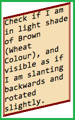

Assertion: To verify if -webkit-transform works using matrix notation.
Evaluation Criteria:
- PASS if the output below is similar to

- FAIL if the output is not as expected.
Check if I am in light shade of Brown (Wheat Colour), and visible as if I am slanting backwards and rotated slightly.